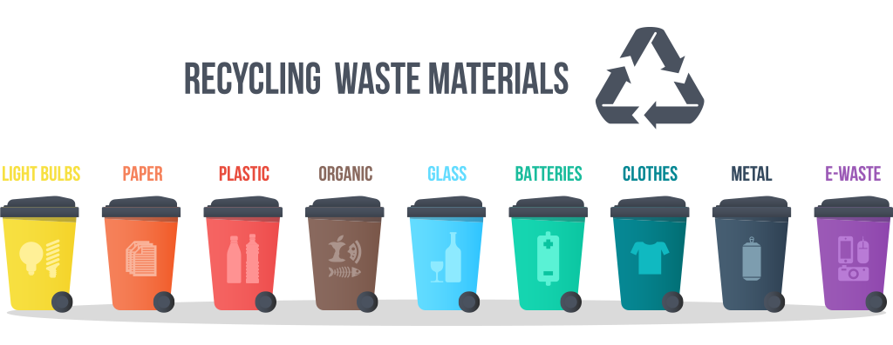

Warning: package 'openxlsx' was built under R version 4.3.3STOP COMPLAINING, IT SOLVES NOTHING.
My project will provide insights about waste management, which is of vital importance to the world and humanity. I hope to convey the awareness and perspective I wish to share with you, since change begins with awareness, and we have to change our way so that our children can live in the world they deserve! 
1. Are we aware? 
Important fact: Are we aware that when we do not recycle waste or use it for energy consumption, it pollutes our groundwater, our soil, and the air through greenhouse gases emitted by the waste, ultimately reducing the quality of the food produced in our soil and our overall life quality?
We just complain, don’t we? Strawberries used to smell like strawberries, tomatoes used to taste different… right?
Unfortunately, complaining doesn’t fix anything, and it won’t. If we want to deserve to live in this world, we must work hard for our generation. The effort we do not put into our waste will heavily come back to haunt us and our children in this universe created with karma. Let’s quit complaining and start acting!

The scope: The processes and activities required to handle waste from its inception to its final disposal are called waste management. These activities include the collection, transport, treatment, and disposal of waste, as well as the monitoring and organization of waste management processes [1]. In this project, insights are attempted to be extracted from several data collections on waste management in Turkiye, with a particular focus on municipal waste statistics. Initially, data are analyzed on a national level, then the analysis is moved to a provincial basis. Then, time series methods are used to forecast waste amount trends in Turkiye. Additionally, the variables that influence the amounts of waste are investigated using regression analysis.
The aim: In this project, the main goals are to increase awareness about waste issues, determine future waste quantities, investigate the waste levels of the provinces, and discuss both prevention strategies and proper disposal and recycling methods for unavoidable waste.
Some information before the analysis: As of 2023, Turkiye’s population is 85 million 279 thousand 553 people and it has a total of 81 provinces, with Istanbul, Ankara, and Izmir being the most populous [2]. According to the data from 2022, 1,389 out of 1,391 municipalities in Turkiye provide waste management services, and it is amassed a total of 30,283,757 tons of waste, and the amount of MSW collected per person is 1.03 kg/day [3]. From this total, 85.9% was directed towards waste treatment facilities, 13.5% was allocated to municipal dumping sites, and the remaining 0.6% was disposed of through alternative methods such as open burning, burial, and the dumping into rivers or onto land [3].
2. Data 
Municipal Solid Waste (MSW), waste collected by the municipalities that provide waste management services, includes everyday trash from homes, businesses, and public places, along with bulky items and yard waste. It also covers street sweepings and waste from public trash bins and markets, if treated like household trash. However, it doesn’t include waste from sewer systems, industrial processes or construction and demolition sites [4].
Multiple data sources are planned to be utilized for the analysis in this area of MSW, primarily focusing on waste quantities, along with Gross Domestic Product (GDP), education, electricity consumption, population figures, and agriculture area for Turkiye and its provinces.
2.1 Data Source 
The references from which I have gathered the data include:
2.2 General Information About the Main Data
- First data set: The municipal waste amount data of Turkiye, which includes information such as the population of Turkiye and its 81 provinces’ municipalities, total waste amounts for the year 2022, the average waste amount per person, etc.
- Second data set: Data including the amounts of collected municipal waste that are sent to municipal landfills, waste processing facilities (the waste sent to landfill sites, incineration plants and all the waste recovery facilities), and disposed of using other methods (disposals by burning in an open area, dumping into river/onto land and burying).
- Third data set: Time series data including municipal waste amounts, waste per capita, waste sent to processing facilities, etc., and time series of waste amounts by provinces of Turkiye for the years 1994-2022.
2.3 Reason of Choice 
This topic was chosen because it was realized that waste management is not given enough importance in Turkiye, and it is believed that carelessness should not continue in this matter. The importance of the subject is indisputable. By using the data sets mentioned above, it is aimed to reveal and analyze the current situation of waste management, to derive knowledge, and to contribute to the literature and our country.
2.4 Preprocessing 
- For “municipal_waste” dataset:
Downloadable dataset in .RData version
Warning: package 'stringr' was built under R version 4.3.2── Attaching core tidyverse packages ──────────────────────── tidyverse 2.0.0 ──
✔ dplyr 1.1.3 ✔ readr 2.1.4
✔ forcats 1.0.0 ✔ stringr 1.5.1
✔ ggplot2 3.4.4 ✔ tibble 3.2.1
✔ lubridate 1.9.3 ✔ tidyr 1.3.0
✔ purrr 1.0.2
── Conflicts ────────────────────────────────────────── tidyverse_conflicts() ──
✖ dplyr::filter() masks stats::filter()
✖ dplyr::lag() masks stats::lag()
ℹ Use the conflicted package (<http://conflicted.r-lib.org/>) to force all conflicts to become errors Provinces
"character"
Total municipal population
"numeric"
Total number of municipalities
"numeric"
Number of municipalities providing waste services
"numeric"
Amount of waste collected (Tonnes) \n
"numeric"
Amount of waste per capita (Kg/capita-day) \n
"numeric" The first six rows of the municipal waste dataset are provided below.
'data.frame': 82 obs. of 6 variables:
$ Provinces : chr "Türkiye" "Adana" "Adıyaman" "Afyonkarahisar" ...
$ Total municipal population : num 80785141 2274106 487642 588048 314539 ...
$ Total number of municipalities : num 1391 16 23 60 12 ...
$ Number of municipalities providing waste services: num 1389 16 22 60 12 ...
$ Amount of waste collected (Tonnes)
: num 30283757 665695 179724 198273 181116 ...
$ Amount of waste per capita (Kg/capita-day)
: num 1.033 0.807 1.019 0.928 1.58 ...The descriptive statistics for each column are provided below.
Provinces Total municipal population Total number of municipalities
Length:82 Min. : 41120 Min. : 4.00
Class :character 1st Qu.: 242100 1st Qu.: 11.00
Mode :character Median : 417945 Median : 16.00
Mean : 1970369 Mean : 33.93
3rd Qu.: 1139026 3rd Qu.: 21.00
Max. :80785141 Max. :1391.00
Number of municipalities providing waste services
Min. : 4.00
1st Qu.: 11.00
Median : 16.00
Mean : 33.88
3rd Qu.: 21.00
Max. :1389.00
Amount of waste collected (Tonnes) \n
Min. : 21392
1st Qu.: 81725
Median : 151235
Mean : 738628
3rd Qu.: 415882
Max. :30283757
Amount of waste per capita (Kg/capita-day) \n
Min. :0.6498
1st Qu.:0.8730
Median :0.9672
Mean :1.0679
3rd Qu.:1.1887
Max. :1.9962 - For “where_to_municipal_waste” dataset:
Downloadable dataset in .RData version
Provinces
"character"
Total amount of waste collected (Tonnes)
"numeric"
Municipality's dumping sites
"numeric"
Waste treatment facilities
"numeric"
Other disposal methods
"numeric" The first six rows of the dataset showing the distribution of municipal waste disposal methods are provided below.
'data.frame': 82 obs. of 5 variables:
$ Provinces : chr "Türkiye" "Adana" "Adıyaman" "Afyonkarahisar" ...
$ Total amount of waste collected (Tonnes): num 30283757 665695 179724 198273 181116 ...
$ Municipality's dumping sites : num 4092721 0 178453 20090 131116 ...
$ Waste treatment facilities : num 26016988 663895 1271 175952 50000 ...
$ Other disposal methods : num 174048 1800 0 2231 0 ...The descriptive statistics for each column are provided below.
Provinces Total amount of waste collected (Tonnes)
Length:82 Min. : 21392
Class :character 1st Qu.: 81725
Mode :character Median : 151235
Mean : 738628
3rd Qu.: 415882
Max. :30283757
Municipality's dumping sites Waste treatment facilities Other disposal methods
Min. : 0 Min. : 0 Min. : 0.0
1st Qu.: 1260 1st Qu.: 52770 1st Qu.: 0.0
Median : 17376 Median : 109595 Median : 0.0
Mean : 99822 Mean : 634561 Mean : 4245.1
3rd Qu.: 56501 3rd Qu.: 333389 3rd Qu.: 557.5
Max. :4092721 Max. :26016988 Max. :174047.6 - For “time_series_municipal_waste” dataset and “ts_province” dataset:
Downloadable dataset in .RData version
Waste/Year 1994 1995 1996 1997 1998
"character" "numeric" "numeric" "numeric" "numeric" "numeric"
2001 2002 2003 2004 2006 2008
"numeric" "numeric" "numeric" "numeric" "numeric" "numeric"
2010 2012 2014 2016 2018 2020
"numeric" "numeric" "numeric" "numeric" "numeric" "numeric"
2022
"numeric" The attributes of the time series dataset are provided below.
'data.frame': 7 obs. of 19 variables:
$ Waste/Year: chr "Turkey population" "Amount of municipal waste generated (Thousand tonnes/year)" "Amount of municipal waste collected (Thousand tonnes/year)" "Average amount of municipal waste per capita (Kg/capita-day)" ...
$ 1994 : num 6.28e+07 2.34e+04 1.78e+04 1.10 1.00e+03 ...
$ 1995 : num 6.28e+07 2.72e+04 2.09e+04 1.27 1.60e+03 ...
$ 1996 : num 6.28e+07 2.93e+04 2.25e+04 1.37 3.03e+03 ...
$ 1997 : num 6.28e+07 3.19e+04 2.42e+04 1.46 4.54e+03 ...
$ 1998 : num 6.28e+07 3.30e+04 2.49e+04 1.51 5.42e+03 ...
$ 2001 : num 6.78e+07 3.10e+04 2.51e+04 1.35 8.52e+03 ...
$ 2002 : num 6.78e+07 3.10e+04 2.54e+04 1.34 7.43e+03 ...
$ 2003 : num 6.78e+07 3.11e+04 2.61e+04 1.38 7.76e+03 ...
$ 2004 : num 6.78e+07 2.97e+04 2.50e+04 1.31 7.35e+03 ...
$ 2006 : num 7.06e+07 3.01e+04 2.53e+04 1.21 9.68e+03 ...
$ 2008 : num 7.06e+07 2.85e+04 2.44e+04 1.15 1.12e+04 ...
$ 2010 : num 7.37e+07 2.97e+04 2.53e+04 1.14 1.39e+04 ...
$ 2012 : num 7.56e+07 3.08e+04 2.58e+04 1.12 1.56e+04 ...
$ 2014 : num 7.77e+07 3.12e+04 2.80e+04 1.08 1.79e+04 ...
$ 2016 : num 7.98e+07 3.38e+04 3.16e+04 1.17 2.24e+04 ...
$ 2018 : num 8.20e+07 3.45e+04 3.22e+04 1.16 2.56e+04 ...
$ 2020 : num 8.36e+07 3.48e+04 3.23e+04 1.13 2.67e+04 ...
$ 2022 : num 8.53e+07 3.24e+04 3.03e+04 1.03 2.60e+04 ...The attributes of the provinces’ time series dataset are provided below.
Warning: Zorlamadan dolayı ortaya çıkan NAs'data.frame': 1134 obs. of 3 variables:
$ Year : num 1998 2001 2002 2003 2004 ...
$ Province : chr "İstanbul" "İstanbul" "İstanbul" "İstanbul" ...
$ Waste amount (1000 ton): num 6074 6112 5231 5375 4471 ...3. Analysis
In the first phase of this section, Exploratory Data Analysis (EDA), the data prepared for analysis is visualized to enable discoveries that are not immediately apparent at first glance. Later, relationships are determined through regression analysis, future predictions are made using time series methods.
3.1 Exploratory Data Analysis
For “municipal_waste” dataset:
The relationship between the population size of Turkiye provinces and the amount of waste generated is shown in the scatter plot below. According to the plot, a linear relationship is observed between them.
Warning: package 'ggthemes' was built under R version 4.3.2Warning: package 'ggrepel' was built under R version 4.3.2
Provinces ranked according to the total number of municipalities can be seen in the below graph together with the number of municipalities.

In the plot below, the first 20 provinces with the highest amount of waste per capita and their populations can be found.

For “where_to_municipal_waste” dataset:
The distribution of waste collected by municipalities according to three disposal methods and provinces is analysed in this section.
The amount of waste allocated for the municipality dumping site can be seen below, plotted by province, with circle diameters representing the total amount of waste.

The amount of waste allocated for the waste treatment facilities can be seen below, plotted by province, with circle diameters representing the total amount of waste.

The amount of waste allocated for the other disposal methods can be seen below, plotted by province, with circle diameters representing the total amount of waste.

The pie chart below shows a rough breakdown of the amount of waste sent to these three disposal methods.

For “time_series_municipal_waste” dataset and “ts_province” dataset:
According to the time series data set, Turkiye’s population change over the years is given below.

The relationship between the total amount of waste generated in Turkiye and the amount collected by municipalities for proper disposal can be accessed from the plot.

Changes in waste amount over the years according to disposal methods are given below.

Descriptive statistics for waste amounts by province dataset:
# A tibble: 10 × 6
Province mean_waste median_waste sd_waste min_waste max_waste
<chr> <dbl> <dbl> <dbl> <dbl> <dbl>
1 İstanbul 5879. 5898 824. 4471 7043
2 Ankara 2182. 2204. 158. 1881 2363
3 İzmir 1654. 1538. 336. 1329 2337
4 Antalya 948. 872. 239. 666 1341
5 Bursa 879 854. 203. 618 1181
6 Konya 756. 740. 84.7 643 921
7 Adana 731. 734 63.6 614 826
8 Mersin 613. 595 97.8 453 819
9 Kocaeli 539. 534 110. 380 713
10 Muğla 529. 528. 99.9 397 677The line graph of waste amounts over the years for the top 5 cities producing the most waste based on provincial waste amount data is drawn.

The box plot for the top 10 provinces with the highest average waste amounts is provided below.

When İstanbul, which was very dominant in the previous boxplot, is excluded, the results are also examined.

3.2 Regression Analysis
Additional Data
The data sets needed to identify variables contributing to total waste generation and to conduct regression analysis have been preprocessed below.
Data on the agricultural area cultivated in the provinces of Turkiye can be accessed below.
'data.frame': 81 obs. of 2 variables:
$ Provinces : chr "İstanbul" "Tekirdağ" "Edirne" "Kırklareli" ...
$ Agriculture area: num 74041 403706 335499 245224 288589 ...The data on educational status of Turkiye’s provinces, categorized by various levels, is provided in education data set.
'data.frame': 81 obs. of 5 variables:
$ Provinces : chr "İstanbul" "Tekirdağ" "Edirne" "Kırklareli" ...
$ Total number of faculty members : num 40140 1221 1871 883 1837 ...
$ Total number of illiterate people : num 206140 11573 7011 4462 17368 ...
$ Number of associate or bachelor's degree graduates: num 167695 3728 6517 3682 7465 ...
$ Number of master's degree graduates : num 389440 14458 6914 5137 18318 ...The first six rows of the electricity consumption data for the provinces of Turkiye are as follows.
'data.frame': 81 obs. of 3 variables:
$ Provinces : chr "İstanbul" "Tekirdağ" "Edirne" "Kırklareli" ...
$ Total electricity consumption (MWh) : num 41520357 8502879 1299120 2715585 4276586 ...
$ Electricity consumption per capita (KWh): num 2621 7637 3152 7412 3420 ...The GDP data for the provinces of Turkiye has been obtained.
'data.frame': 82 obs. of 3 variables:
$ Provinces : chr "Türkiye" "İstanbul" "Tekirdağ" "Edirne" ...
$ GDP per capita (TL): num 176651 287524 253501 147752 201355 ...
$ GDP per capita ($) : num 10659 17349 15296 8915 12150 ...If the response variable is extracted from the municipal data set, the desired variable of waste amount by province can be obtained for the analysis.
'data.frame': 81 obs. of 2 variables:
$ Provinces : chr "Adana" "Adıyaman" "Afyonkarahisar" "Ağrı" ...
$ Amount of waste collected (Tonnes): num 665695 179724 198273 181116 111099 ...The regression analysis below has been conducted using the total amount of waste collected at the provincial level as the response variable. The independent variables include GDP per capita, agricultural area, total number of faculty members, total number of illiterate people, number of associate or bachelor’s degree graduates, number of master’s degree graduates, and electricity consumption. The final table prepared for regression analysis can be found below.
'data.frame': 82 obs. of 11 variables:
$ Provinces : chr "Adana" "Adıyaman" "Afyonkarahisar" "Ağrı" ...
$ Amount of waste collected (Tonnes) : num 665695 179724 198273 181116 111099 ...
$ Agriculture area : num 400819 166921 536127 351566 235758 ...
$ Total number of faculty members : num 2593 925 1647 561 725 ...
$ Total number of illiterate people : num 54962 26688 12334 25954 6815 ...
$ Number of associate or bachelor's degree graduates: num 7987 2453 6787 2065 2870 ...
$ Number of master's degree graduates : num 33810 7359 9331 3925 4385 ...
$ Total electricity consumption (MWh) : num 7991581 1327087 2131943 495005 706136 ...
$ Electricity consumption per capita (KWh) : num 3531 2099 2865 944 2106 ...
$ GDP per capita (TL) : num 135798 79223 114168 55296 112044 ...
$ GDP per capita ($) : num 8194 4780 6889 3337 6761 ...Regression Analysis
In regression analysis using the forward selection method, the model begins with the variable that exhibits the highest correlation with the response variable, ‘Amount of waste collected’. Subsequently, additional variables are incorporated into the model based on their partial correlations.
Warning: package 'ppcor' was built under R version 4.3.3Zorunlu paket yükleniyor: MASS
Attaching package: 'MASS'The following object is masked from 'package:dplyr':
selectWarning: package 'readxl' was built under R version 4.3.3 [,1]
Agriculture area 0.1237475
Total number of faculty members 0.9500715
Total number of illiterate people 0.8469772
Number of associate or bachelor's degree graduates 0.7395918
Number of master's degree graduates 0.9708360
Total electricity consumption (MWh) 0.9327005
GDP per capita (TL) 0.5047206The plot between the response variable and the independent variable with highest correlation (Number of master’s degree graduates):

Partial correlations: between variables while controlling the variable with the highest correlation:
estimate p.value statistic n gp Method
1 0.5732279 2.742934e-08 6.178469 81 1 pearsonWhen examining the partial correlation values for other columns, taking into account those with significant p-values, the variable with the highest partial correlation is ‘Total electricity consumption’. Therefore, it should be the second variable added to the regression model.
In the next step, partial correlations are examined while controlling for the two variables with the highest correlations this time. Those that pass the significant test from the previous step are included in this calculations.
estimate p.value statistic n gp Method
1 0.334597 0.002578755 3.115659 81 2 pearsonWhen the partial correlations calculated by controlling for the two variables were checked, both were less than 0.5. In other words, there are no remaining variables with a strong relationship. In the final model, the independent variables affecting the response variable “Amount of waste collected” were selected as “Number of master’s degree graduates” and “Total electricity consumption” using the forward selection method.
The results of the multiple regression analysis with the relevant columns are as follows.
Call:
lm(formula = `Amount of waste collected (Tonnes)` ~ `Number of master's degree graduates` +
`Total electricity consumption (MWh)`, data = ln_version_reg_data)
Residuals:
Min 1Q Median 3Q Max
-0.29626 -0.09862 -0.00168 0.07417 0.31978
Coefficients:
Estimate Std. Error t value Pr(>|t|)
(Intercept) 1.26657 0.18717 6.767 2.18e-09 ***
`Number of master's degree graduates` 0.87283 0.07469 11.687 < 2e-16 ***
`Total electricity consumption (MWh)` 0.09492 0.06526 1.455 0.15
---
Signif. codes: 0 '***' 0.001 '**' 0.01 '*' 0.05 '.' 0.1 ' ' 1
Residual standard error: 0.13 on 78 degrees of freedom
Multiple R-squared: 0.9254, Adjusted R-squared: 0.9234
F-statistic: 483.4 on 2 and 78 DF, p-value: < 2.2e-16Since the variable representing total electricity consumption is not significant, it has been excluded from the model. Therefore, the most suitable and effective version of our model, achieving the highest possible R-squared value, is the simple regression model that solely includes the variable “Number of master’s graduates”.
Call:
lm(formula = `Amount of waste collected (Tonnes)` ~ `Number of master's degree graduates`,
data = ln_version_reg_data)
Residuals:
Min 1Q Median 3Q Max
-0.312666 -0.083161 -0.001103 0.064059 0.303947
Coefficients:
Estimate Std. Error t value Pr(>|t|)
(Intercept) 1.4720 0.1237 11.90 <2e-16 ***
`Number of master's degree graduates` 0.9715 0.0315 30.84 <2e-16 ***
---
Signif. codes: 0 '***' 0.001 '**' 0.01 '*' 0.05 '.' 0.1 ' ' 1
Residual standard error: 0.1309 on 79 degrees of freedom
Multiple R-squared: 0.9233, Adjusted R-squared: 0.9224
F-statistic: 951.3 on 1 and 79 DF, p-value: < 2.2e-16# A tibble: 2 × 5
term estimate std.error statistic p.value
<chr> <dbl> <dbl> <dbl> <dbl>
1 (Intercept) 1.47 0.124 11.9 2.68e-19
2 `Number of master's degree graduates` 0.971 0.0315 30.8 8.17e-46Model adequacy checking in a regression model is best achieved by thoroughly analyzing the residuals. Below are the graphs related to residual analysis.
There seems no problem in Residual vs Fitted values plot. This means that the assumption of constant variance is satisfied.
`geom_smooth()` using formula = 'y ~ x'
The q-q plot to check if residuals are normally distributed is drawn, and there is no problem with that.

In the Q-Q plot, tails are observed on both the right and left sides. To be sure, an Anderson-Darling normality test should also be conducted.
Anderson-Darling normality test
data: residuals
A = 0.43796, p-value = 0.2882A p-value of 0.28 in the Anderson-Darling test indicates that there is not enough evidence to reject the null hypothesis that the residuals are normally distributed. Therefore, it can be assumed that the residuals are normally distributed; the normality assumption for the regression model’s residuals is considered to be met.
The plot below helps to check for homoscedasticity. According to it, there is no such a problem.

3.3 Time Series Analysis 
The MSW time series data for Turkiye lacks values for some intermediate years (e.g. 2017, 2019, 2021, etc.), which implies that time series analysis must be conducted under incomplete information. In this respect, Grey Prediction (GP) is a powerful forecasting approach to effectively manage the forecast analysis for MSW [6]. This method is particularly advantageous when data availability is limited, as it requires only a few data points to construct reliable models [6]. The core idea of GP involves transforming a complex data series into a more predictable one using a set of operations, such as the Accumulated Generating Operator (AGO), the Inverse Accumulating Operator (IAGO) and Grey Model (GM) [6].
The ExoplanetX greyforecasting R package is used to apply GP models to the MSW time series [7]. All GP models included in the package are applied to the data in the background, and the best model in terms of performance is provided along with its accuracy and 5-year forecasting results.
The GP models in the package are as follows (*):
gm: Grey Model (1,1), It’s a first-order differential equation model with one variable.
gm_1: GM(1,1)_1, This variant of the GM(1,1) model includes slight modifications or improvements over the standard GM(1,1) model to enhance prediction accuracy or adapt to specific types of data.
gm_2: GM(1,1)_2, Another variant of the GM(1,1) model, with different modifications from GM(1,1)_1, aiming to improve forecasting performance under certain conditions.
dgm: Discrete Grey Model, This model is a discrete version of the grey prediction model, which operates on discrete data points rather than continuous data, making it suitable for time series data that are naturally discrete.
verhulst: Verhulst Model, The Verhulst model is a nonlinear grey prediction model that is particularly useful for data that follow an S-shaped growth curve, such as population growth or diffusion processes.
pgm: Grey Power Model, The Grey Power Model is another variant of grey models that incorporates power functions into the grey modeling process to handle data with certain types of nonlinearity.
First, the necessary packages are installed, and libraries are called.
Attaching package: 'greyforecasting'The following object is masked from 'package:dplyr':
combineWarning: package 'Metrics' was built under R version 4.3.3
Attaching package: 'Metrics'The following objects are masked from 'package:greyforecasting':
ape, mapeWhen all models are applied to the data in the background, the method that gives the best result is the DGM (Discrete Grey Model) method.
The best model is: dgm Then, the accuracy metric value and forecast values for the next 5 years are provided for the DGM model.
Best model RMSE: 1365.859 [1] 30271.09 30922.96 30883.69 31518.20 31456.93Finally, the original data, fitted values, and forecast points are shown in the graph below.

In the above graph, an increasing trend over the years is observed due to the consideration of total waste amounts. However, Turkiye’s population growth is also a factor that must be taken into account. When analyzing the per capita waste production instead of the total amounts, the graph below is obtained.
The best model is: dgm Then, the accuracy metric value and forecast values for the next 5 years are provided for the DGM model.
Best model RMSE: 0.1330711 [1] 0.9997255 1.0134248 0.9806750 0.9938774 0.9619003Finally, the original data, fitted values, and forecast points are shown in the graph below.

In the waste per capita case, the best fit model according to RMSE is again the DGM. Unlike before, a decreasing trend over the years is noticeable in above figure, indicating that the increasing population must be considered in the analysis.
The following are the results obtained when performing the same grey forecasting analysis for Ankara.
The best model is: dgm Best model RMSE: 290.0232 [1] 1884.965 1933.066 1861.282 1907.419 1836.855The graph:

Based on the time series analysis, it was concluded that the DGM model is the most appropriate time series model for the data containing total MSW quantities. The fact that data is not available at irregular intervals of time already tells us that the model suitable for the data should be discrete. The DGM model forecasted the next five years with the following values: 30,271.09, 30,922.96, 30,883.69, 31,518.20, and 31,456.93 tonnes. As shown in plots above, the model closely fits the historical data and strengthens the reliability of these forecast values. It is also the best method according to the RMSE performance metric.
The observed increasing trend is consistent with Turkiye’s historical waste generation patterns and highlights the increasing waste management challenge posed by urbanization and population growth. In addition, considering Turkiye’s population growth, waste generation per capita was also analysed in the study. The per capita waste forecasts have shown a decreasing trend over the years.
In addition, the MSW time series analysis of our city (Ankara) is also included. The DGM model was again dominant, which is logical since it is again an interval time data.
4. Conclusion
Effective planning of solid waste management systems depends on analysing and forecasting MSW flows. Accordingly, analysing waste quantity data is crucial for informed decision-making and strategic planning related to waste management in Turkiye. In this respect, the aim of this study is to analyse and forecast MSW quantities in Turkiye by examining socio-economic factors through regression analysis and applying time series models for forecasting.
Firstly, EDA was applied to the dataset to reveal the underlying relationships and patterns in the data. Factors (economic, education, agriculture, electricity, etc.) that are thought to affect the amount of waste are added as data and a regression analysis is performed. As a result, a model using the number of master’s degree graduates in relation to the amount of waste was established and proved to be accurate.
Then, time series models were evaluated to predict future MSW quantities. Since the structure of the dataset is discrete with no regular values in intermediate periods, it was decided that GP methods are appropriate. Among the GP models, the DGM model was found to be the most appropriate model for the given data due to its discrete nature and high accuracy, as indicated by the RMSE performance measure. The observed upward trend in waste generation is in line with Turkiye’s historical data and emphasizes the increasing challenge of waste management in urban areas.
Strategic decision-making in waste management systems are crucial to overcome these challenges. The findings underline the necessity of sustainable waste management practices and sound policies to reduce the environmental impacts of increasing waste generation.
References
- A. E. İnce, “Defining New Political Tools for Municipal Solid Waste Management of Ankara Metropolitan Municipalitiy After Revision of Metropolitan Municipality Law in 2014,” Master’s Thesis, Middle East Technical University, Council of Higher Education Thesis Center, 2019.
- TURKSTAT. “The Results of Address Based Population Registration System, 2023.” https://data.tuik.gov.tr/Bulten/Index?p=The-Results-of-Address-Based-Population-Registration-System-2023-49684&dil=2 (accessed May 5, 2024).
- TURKSTAT. “Waste Statistics, 2022.” https://data.tuik.gov.tr/Bulten/Index?p=Waste-Statistics-2022-49570&dil=2 (accessed May 3, 2024).
- OECD. “Municipal Waste.” https://data.oecd.org/waste/municipal-waste.htm (accessed April 21, 2024).
- H.-W. Chen and N.-B. Chang, “Prediction analysis of solid waste generation based on grey fuzzy dynamic modeling,” Resources, conservation and Recycling, vol. 29, no. 1-2, pp. 1-18, 2000.
- D. Akay and M. Atak, “Grey prediction with rolling mechanism for electricity demand forecasting of Turkey,” energy, vol. 32, no. 9, pp. 1670-1675, 2007.
- ExoplanetX. “Greyforecasting: A package for grey systems forecasting methods.” https://rdrr.io/github/exoplanetX/greyforecasting/. (accessed May 15, 2024).
(*) ChatGPT
Dilara’s Analytics Lab - STOP COMPLAINING, IT SOLVES NOTHING. Dilara’s Analytics Lab - STOP COMPLAINING, IT SOLVES NOTHING. Dilara’s Analytics Lab - STOP COMPLAINING, IT SOLVES NOTHING. Dilara’s Analytics Lab